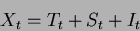
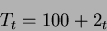
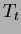
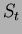
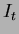

Next: StarImpress: Creador y Visualizador
Up: De prácticas
Previous: Seguimiento de Acciones y
Índice General
Objetivo. Calcular las previsiones para años futuros dada una serie de
datos con un modelo sencillo.
Los datos a utilizar son los siguientes y que se presentan de esta
manera por economía de espacio.
| t |
1 |
2 |
3 |
4 |
5 |
6 |
7 |
8 |
9 |
10 |
11 |
12 |
| X |
99,93 |
103 |
103,41 |
112,79 |
109,52 |
113,57 |
110,5 |
120,42 |
118,23 |
119 |
118,75 |
127,32 |
| t |
13 |
14 |
15 |
16 |
17 |
18 |
19 |
20 |
21 |
22 |
23 |
24 |
| Xt |
124,93 |
128,13 |
127,55 |
137,06 |
131,95 |
133,91 |
135,35 |
146,19 |
138,57 |
143,14 |
144,64 |
153,72 |
Se va a indicar la manera de hacer esta práctica paso a paso, por lo
que no será necesario el conocimiento previo ni de análisis de series
de datos ni del uso de la hoja de cálculo 5.14
- El primer paso sería introducir los datos de la tabla anterior en una
columna que denominaremos X.
- Segundo paso, representar la serie X en el tiempo. Para eso seleccionamos
los datos de la columna X, y vamos a [Insertar] [Diagrama]. Seguiremos
los pasos de la sección Gráficos en la página
![[*]](crossref.png) .
.
- Supongamos:


- Obtener el componente tendencial, .
En la celda B1, ponemos t introducimos 1, en B3 escribimos
=1+b2. Copiamos la celda B3 desde B4 hasta B25. En la celda C1 escribimos
Tt. En C2, =100+2*b2 5.15. Y copiamos
C2 desde C3 hasta C25.
- Componente estacional, .
Definimos las variables cualitativas:
- Obteniendo las variables cualitativas estacionales.
En D1 escribimos d1, en D2 ponemos 1, en las celdas D3, D4, D5 se
escribe 0. En E1, d2, para E2, escribimos 1, y en E2, E4 y
E5, 0. Para F1, d3, 1 en F4, 0 para F2, F3 y F5.
En G1 ponemos d4, em G2, G3, G4 0, para G5 1.
Se seleccionan las celdas D2 hasta G5 y se copian desde D6 hasta G25.
En la celda H1 escribimos St, y en H2 =-1*d2-1*e2-2*f2+4*g2,
copiaremos esta casilla desde H3 hasta H25.
- Componente irregular, .
En la celda I1 se escribe It. En la celda I2 =a2-c2-h2. Copiaremos
I2 desde I3 hasta I25.
Calculamos el valor medio de la serie: en I26 insertamos =suma(i2:125)/24.
- El último paso que faltaría es representar gráficamente las series ,
e frente al tiempo.
Para finalizar, lo más aconsejable es guardar los datos con [Archivo] y
[Guardar].
Next: StarImpress: Creador y Visualizador
Up: De prácticas
Previous: Seguimiento de Acciones y
Índice General
Proyecto Cursos - LuCAS - http://lucas.hispalinux.es/htmls/cursos.html